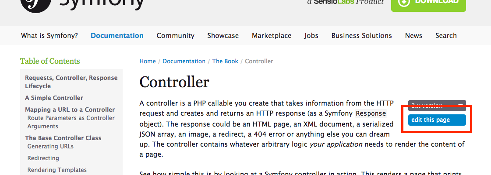
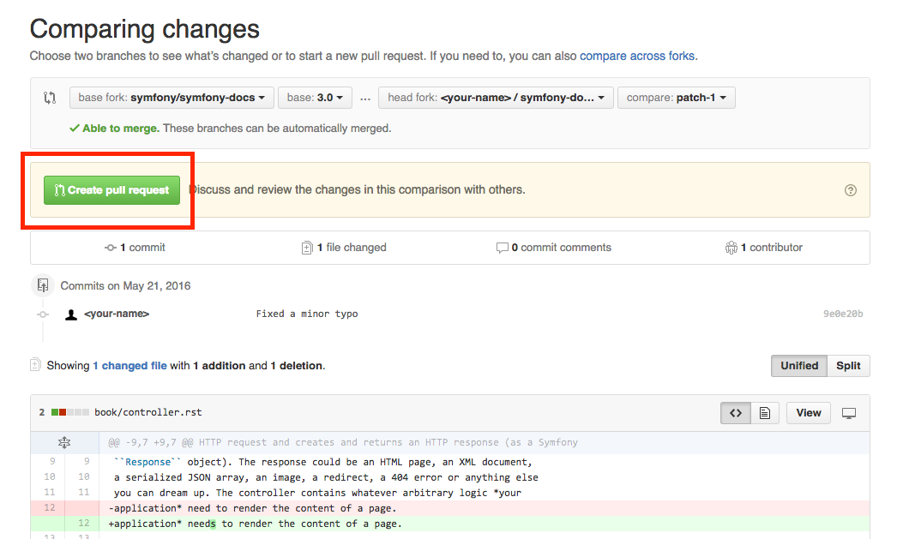
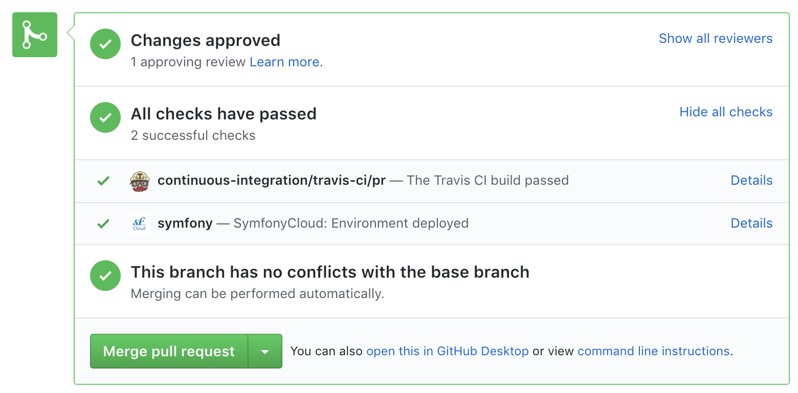

Contributing to the Documentation¶
Before Your First Contribution¶
Before contributing, you need to:
- Sign up for a free GitHub account, which is the service where the Symfony documentation is hosted.
- Be familiar with the reStructuredText markup language, which is used to write Symfony docs. Read this article for a quick overview.
Fast Online Contributions¶
If you’re making a relatively small change - like fixing a typo or rewording something - the easiest way to contribute is directly on GitHub! You can do this while you’re reading the Symfony documentation.
Step 1. Click on the edit this page button on the upper right corner and you’ll be redirected to GitHub:
Step 2. Edit the contents, describe your changes and click on the Propose file change button.
Step 3. GitHub will now create a branch and a commit for your changes (forking the repository first if this is your first contribution) and it will also display a preview of your changes:
If everything is correct, click on the Create pull request button.
Step 4. GitHub will display a new page where you can do some last-minute changes to your pull request before creating it. For simple contributions, you can safely ignore these options and just click on the Create pull request button again.
Congratulations! You just created a pull request to the official Symfony documentation! The community will now review your pull request and (possibly) suggest tweaks.
If your contribution is large or if you prefer to work on your own computer, keep reading this guide to learn an alternative way to send pull requests to the Symfony Documentation.
Your First Documentation Contribution¶
In this section, you’ll learn how to contribute to the Symfony documentation for the first time. The next section will explain the shorter process you’ll follow in the future for every contribution after your first one.
Let’s imagine that you want to improve the Setup guide. In order to make your changes, follow these steps:
Step 1. Go to the official Symfony documentation repository located at github.com/symfony/symfony-docs and click on the Fork button to fork the repository to your personal account. This is only needed the first time you contribute to Symfony.
Step 2. Clone the forked repository to your local machine (this example
uses the projects/symfony-docs/ directory to store the documentation; change
this value accordingly):
1 2 | $ cd projects/
$ git clone git://github.com/YOUR-GITHUB-USERNAME/symfony-docs.git
|
Step 3. Add the original Symfony docs repository as a “Git remote” executing this command:
1 2 | $ cd symfony-docs/
$ git remote add upstream https://github.com/symfony/symfony-docs.git
|
If things went right, you’ll see the following when listing the “remotes” of your project:
1 2 3 4 5 | $ git remote -v
origin git@github.com:YOUR-GITHUB-USERNAME/symfony-docs.git (fetch)
origin git@github.com:YOUR-GITHUB-USERNAME/symfony-docs.git (push)
upstream https://github.com/symfony/symfony-docs.git (fetch)
upstream https://github.com/symfony/symfony-docs.git (push)
|
Fetch all the commits of the upstream branches by executing this command:
1 | $ git fetch upstream
|
The purpose of this step is to allow you work simultaneously on the official Symfony repository and on your own fork. You’ll see this in action in a moment.
Step 4. Create a dedicated new branch for your changes. Use a short and
memorable name for the new branch (if you are fixing a reported issue, use
fix_XXX as the branch name, where XXX is the number of the issue):
1 | $ git checkout -b improve_install_article upstream/4.4
|
In this example, the name of the branch is improve_install_article and the
upstream/4.4 value tells Git to create this branch based on the 4.4
branch of the upstream remote, which is the original Symfony Docs repository.
Fixes should always be based on the oldest maintained branch which contains
the error. Nowadays this is the 4.4 branch. If you are instead documenting a
new feature, switch to the first Symfony version that included it, e.g.
upstream/3.1. Not sure? That’s OK! Just use the upstream/master branch.
Step 5. Now make your changes in the documentation. Add, tweak, reword and even remove any content and do your best to comply with the Documentation Standards. Then commit your changes!
1 2 3 | # if the modified content existed before
$ git add setup.rst
$ git commit setup.rst
|
Step 6. Push the changes to your forked repository:
1 | $ git push origin improve_install_article
|
The origin value is the name of the Git remote that corresponds to your
forked repository and improve_install_article is the name of the branch you
created previously.
Step 7. Everything is now ready to initiate a pull request. Go to your
forked repository at https://github.com/YOUR-GITHUB-USERNAME/symfony-docs
and click on the Pull Requests link located in the sidebar.
Then, click on the big New pull request button. As GitHub cannot guess the exact changes that you want to propose, select the appropriate branches where changes should be applied:

In this example, the base fork should be symfony/symfony-docs and
the base branch should be the 4.4, which is the branch that you selected
to base your changes on. The head fork should be your forked copy
of symfony-docs and the compare branch should be improve_install_article,
which is the name of the branch you created and where you made your changes.
Step 8. The last step is to prepare the description of the pull request. A short phrase or paragraph describing the proposed changes is enough to ensure that your contribution can be reviewed.
Step 9. Now that you’ve successfully submitted your first contribution to the Symfony documentation, go and celebrate! The documentation managers will carefully review your work in short time and they will let you know about any required change.
In case you are asked to add or modify something, don’t create a new pull request. Instead, make sure that you are on the correct branch, make your changes and push the new changes:
1 2 3 4 5 6 | $ cd projects/symfony-docs/
$ git checkout improve_install_article
# ... do your changes
$ git push
|
Step 10. After your pull request is eventually accepted and merged in the Symfony documentation, you will be included in the Symfony Documentation Contributors list. Moreover, if you happen to have a SymfonyConnect profile, you will get a cool Symfony Documentation Badge.
Your Next Documentation Contributions¶
Check you out! You’ve made your first contribution to the Symfony documentation! Somebody throw a party! Your first contribution took a little extra time because you needed to learn a few standards and setup your computer. But from now on, your contributions will be much easier to complete.
Here is a checklist of steps that will guide you through your next contribution to the Symfony docs:
1 2 3 4 5 6 7 8 9 10 11 12 13 14 15 16 17 18 19 | # create a new branch based on the oldest maintained version
$ cd projects/symfony-docs/
$ git fetch upstream
$ git checkout -b my_changes upstream/4.4
# ... do your changes
# (optional) add your changes if this is a new content
$ git add xxx.rst
# commit your changes and push them to your fork
$ git commit xxx.rst
$ git push origin my_changes
# ... go to GitHub and create the Pull Request
# (optional) make the changes requested by reviewers and commit them
$ git commit xxx.rst
$ git push
|
After completing your next contributions, also watch your ranking improve on the list of Symfony Documentation Contributors. You guessed right: after all this hard work, it’s time to celebrate again!
Review your changes¶
Every GitHub Pull Request is automatically built and deployed by SymfonyCloud on a single environment that you can access on your browser to review your changes.
To access the SymfonyCloud environment URL, go to your Pull Request page on
GitHub, click on the Show all checks link and finally, click on the
Details link displayed for SymfonyCloud service.
Note
Only Pull Requests to maintained branches are automatically built by SymfonyCloud. Check the roadmap for maintained branches.
Build the Documentation Locally¶
If you have Docker installed on your machine, run these commands to build the docs:
1 2 3 4 5 6 | # build the image...
$ docker build . -t symfony-docs
# ...and start the local web server
# (if it's already in use, change the '8080' port by any other port)
$ docker run --rm -p 8080:80 symfony-docs
|
You can now read the docs at http://127.0.0.1:8080 (if you use a virtual
machine, browse its IP instead of localhost; e.g. http://192.168.99.100:8080).
If you don’t use Docker, follow these steps to build the docs locally:
Install pip as explained in the pip installation article;
Install Sphinx and Sphinx Extensions for PHP and Symfony (depending on your system, you may need to execute this command as root user):
1 2
$ cd _build/ $ pip install -r .requirements.txt
Run the following command to build the documentation in HTML format:
1 2
$ cd _build/ $ make html
The generated documentation is available in the _build/html directory.
Frequently Asked Questions¶
Why Do my Changes Take so Long to Be Reviewed and/or Merged?¶
Please be patient. It can take up to several days before your pull request can be fully reviewed. After merging the changes, it could take again several hours before your changes appear on the Symfony website.
Why Should I Use the Oldest Maintained Branch Instead of the Master Branch?¶
Consistent with Symfony’s source code, the documentation repository is split
into multiple branches, corresponding to the different versions of Symfony itself.
The master branch holds the documentation for the development branch of
the code.
Unless you’re documenting a feature that was introduced after Symfony 4.4,
your changes should always be based on the 4.4 branch. Documentation managers
will use the necessary Git-magic to also apply your changes to all the active
branches of the documentation.
What If I Want to Submit my Work without Fully Finishing It?¶
You can do it. But please use one of these two prefixes to let reviewers know about the state of your work:
[WIP](Work in Progress) is used when you are not yet finished with your pull request, but you would like it to be reviewed. The pull request won’t be merged until you say it is ready.[WCM](Waiting Code Merge) is used when you’re documenting a new feature or change that hasn’t been accepted yet into the core code. The pull request will not be merged until it is merged in the core code (or closed if the change is rejected).
Would You Accept a Huge Pull Request with Lots of Changes?¶
First, make sure that the changes are somewhat related. Otherwise, please create separate pull requests. Anyway, before submitting a huge change, it’s probably a good idea to open an issue in the Symfony Documentation repository to ask the managers if they agree with your proposed changes. Otherwise, they could refuse your proposal after you put all that hard work into making the changes. We definitely don’t want you to waste your time!